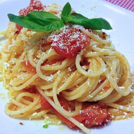

spaghetti

Delicious homemade spaghetti
2 tablespoons olive oil
4 large onions,sliced
2 cloves garlic,crushed
1 tablespoon tomato paste
1 (14.5 ounce)can whole peeled tomatoes
1 teaspoon salt
1/2 teaspoon freshly ground black pepper
1 tablespoon chopped fresh basil
1/4 cup water
1 pound spaghetti
steps
oil in a large skillet over medium heat.Cook onions and garlic in oil until soft.stir in tomato paste, tomatoes,salt,pepper,basil and water. Cover,reduce heat to low, and simmer 20 minutes, until thickened
While sauce is simmering, bring a large pot of lightly salted water to a boil.Add pasta and cook for 8 to 10 minutes or until al dente;drain.
Toss sauce with hot pasta